นักเรียนอัจฉริยะจากวิทยาลัยแห่งหนึ่งในพัทยา กลายเป็นฮีโร่! ได้รับทั้งชื่อเสียงและรางวัล หลังคิดค้นนวัตกรรมลดน้ำหนักได้สำเร็จ
ความคิดเห็น1295
ปี 2021 ชื่อของ กฤษฎา เด็กหนุ่มวัย 19 ปี จากประเทศไทย ไปปรากฏอยู่ในรายการทีวีหลายช่องในประเทศสหรัฐอเมริกา ในฐานะเด็กหนุ่มวัย 15 ที่บินข้ามน้ำข้ามทะเลไปเรียนหนังสือที่ประเทศสหรัฐอเมริกาได้กลายเป็นฮีโร่คนใหม่ รายการดังๆ ทั่วสหรัฐอเมริกาต่างพูดถึงนวัตกรรมการลดน้ำหนักที่ไม่ต้องอดอาหาร ไม่ต้องพึ่งการออกกำลังกาย แต่ในที่สุดนวัตกรรมนี้ได้มาอยู่ในเมืองไทยแล้ว เกิดอะไรขึ้นกับเรื่องนี้?
ชีวิตวัยเรียนของ กฤษฎา ก็ไม่ต่างจากนักเรียนคนอื่นๆ ในวิทยาลัย เขาใช้เวลาว่างหลังเลิกเรียนไปค้นคว้าเกี่ยวกับระบบไร้ท่อในร่างกายมนุษย์ จนสามารถคิดค้นนวัตกรรมที่ยิ่งใหญ่ออกมาได้สำเร็จ เขาได้ทดลองกับตัวเองและได้ค้นพบผลลัพธ์ที่น่าทึ่ง!
นวัตกรรมนี้ช่วยให้น้ำหนักตัวหายไปถึง 40 กิโลฯ ภายในหนึ่งเดือน มันเป็นไปได้จริงหรือ? เราตัดสินใจติดต่อเด็กหนุ่มคนนี้เพื่อขอสัมภาษณ์
- คุณกฤษฎาครับ เท่าที่เราทราบ วิทยาลัยที่คุณเรียนไม่ได้เชี่ยวชาญเรื่องโภชนาการเลยด้วยซ้ำ ทำไมคุณถึงสนใจประเด็นนี้ได้- ต้องเล่าย้อนกลับไปสมัยเด็กๆ ผมอ้วนมาตั้งแต่เกิดครับ ตอนเรียนหนังสือ ทุกครั้งที่เดินไปห้องน้ำ เพื่อนๆ ที่จับกลุ่มกันอยู่ที่สนามหญ้า จะหัวเราะเยาะผมเสมอ พวกนั้นเรียกผมว่า “เด็กเรียน” กับ “ตุ้ยนุ้ย” ญาติพี่น้องผมเองก็ไม่ได้เดือดเนื้อร้อนใจกับความทุกข์ของผมเลย เวลาที่ผมหิว ก็จะบังคับให้ผมกินน้อยๆ แต่มันก็ไม่ได้ช่วยอะไรผมได้เลย ผมทุกข์ทรมานทั้งร่างกายและจิตใจ พอผมอายุ 19 ก็ยังอ้วนเหมือนเดิม ผมเบื่อหน่ายกับชีวิตแบบนี้ อยากจะเปลี่ยนแปลงตัวเองก็เลยกลายเป็นแรงผลักดันให้เลือกเรียนในสาขาที่เกี่ยวกับปัญหาระบบเผาผลาญในร่างกายนั่นเองครับ
– ทำไมคุณถึงตัดสินใจคิดค้นนวัตกรรมขึ้นเอง การควบคุมอาหารหรือออกกำลังกายไม่ดีกว่าหรือครับ?– ตอนเรียน ม.ปลาย ผมตัดสินใจลดน้ำหนักอย่างจริงจังครับ จากที่ไม่เคยสนใจไยดีมาตลอด เริ่มแรกผมลองหลายวิธีมาก กินแต่ผัก กินแต่โปรตีน หรือกินแต่แป้ง...แต่มันก็ไม่ได้ผล หรือถ้าเห็นผลก็เป็นเพียงช่วงเวลาสั้นๆ นั่นเพราะความจริงแล้ว คนเราคุมอาหารตลอดเวลาไม่ได้หรอกครับ ถึงแม้ว่าเราคุมอาหารจนน้ำหนักตัวลงมาได้แล้วก็ตาม เราก็อยากจะกลับมากินได้เหมือนเดิมและไม่ต้องการที่จะอยากอาหารเหมือนเดิม แต่เมื่อใดก็ตามที่คุณกลับไปกินเหมือนเดิม น้ำหนักตัวก็จะกลับขึ้นมาอีก ผมเบื่อหน่ายกับการที่น้ำหนักตัวขึ้นๆ ลงๆ แบบนี้ จากนั้นผมก็ไปสมัครฟิตเนส ผมได้เทรนเนอร์ที่ดีและใส่ใจผมมาก แต่เขาก็ยอมรับว่า มีเพียงคนส่วนน้อยเท่านั้นที่การออกกำลังกายช่วยลดน้ำหนักได้ คนส่วนใหญ่ยังคงมีปัญหาน้ำหนักตัวไปตลอดชีวิต พอผมได้ยินแบบนี้ ผมบอกตัวเองเลยว่า ผมนี่แหละ จะเป็นคนที่มาเปลี่ยนแปลงสิ่งนี้เอง
– คุณช่วยเล่ารายละเอียดให้เราฟังหน่อยว่าคุณคิดค้นอะไร และเจ้าสิ่งนี้ยอดเยี่ยมอย่างไร?– EFFERIN เป็นผลิตภัณฑ์ลดน้ำหนักที่เข้าไปมีผลโดยตรงกับสมองส่วนควบคุมความอยากอาหารของคนเราครับ ผลิตภัณฑ์นี้เข้าไปทำหน้าที่ 2 อย่าง พร้อมๆ กัน สำหรับคนที่เพิ่งเริ่มกิน คุณจะเริ่มไม่รู้สึกหิวบ่อยเหมือนเดิม ต่อให้อาหารจานโปรดของคุณอยู่ตรงหน้าก็ตาม เพียง 2-3 คำ ก็รู้สึกไม่อยากกินแล้ว แม้กลิ่นอาหารจะเย้ายวนแค่ไหนก็ไม่ทำให้คุณอยากได้ อีกหน้าที่ของผลิตภัณฑ์ตัวนี้ คือกระตุ้นการเผาผลาญไขมัน ระบบเผาผลาญของคุณจะเปลี่ยนไป ถ้าคุณเคยมีไขมันเกาะตามตัว หน้าท้อง และปัญหาไขมันสะสมในส่วนอื่นๆ EFFERIN จะเข้าไปเผาผลาญไขมันทันทีหลังจากที่ผลิตภัณฑ์นี้เข้าสู่ร่างกายแล้ว อาหารที่กินเข้าไปก็จะไม่ทำให้น้ำหนักตัวเกิน ไขมันส่วนเกินที่อยู่ในร่างกายก็จะถูกเผาผลาญในขณะที่คุณนั่งทำงานหรือในตอนหลับ ดังนั้น คุณจึงสามารถลดน้ำหนักได้ถึง 14 กิโลฯ ต่อสัปดาห์
– คุณเป็นคนแรกที่ได้ลองใช้ผลิตภัณฑ์นี้หรือไม่ครับ?– เริ่มจากการทดลองกับสัตว์ในห้องแลปก่อนครับ จนมั่นใจว่าผลิตภัณฑ์ปลอดภัยและสามารถใช้ได้จริง ผมจึงลองด้วยตัวเอง และผลที่ออกมา ผมน้ำหนักตัวหายไป 35 กิโลฯ จนเพื่อนๆ และคนรู้จักยังจำผมแทบไม่ได้
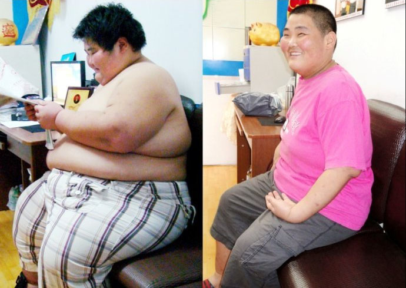 – คนอื่นๆ ล่ะ มีใครอีกบ้างที่ได้ลอง EFFERIN แล้ว?– แรกๆ ผมเก็บรวบรวมรีวิวของคนที่ได้ลองใช้แล้ว แต่ช่วงนี้เนื่องจากมีคนทักเข้ามาสอบถามเกี่ยวกับผลิตภัณฑ์เข้ามาค่อนข้างเยอะ ทำให้ผมขาดการติดต่อกับคนกลุ่มนั้นครับ ทุกๆ วันจะมีคนลอง EFFERIN มากขึ้นเรื่อยๆ และแชร์ผลลัพธ์มาให้ผมดู ภาพของผู้คนทั้งชายหญิงที่ชีวิตเขาได้เปลี่ยนแปลงไป ทำเอาผมน้ำตาคลอปลาบปลื้มใจทุกครั้ง พวกเขาสามารถลดน้ำหนักตัวได้สำเร็จ และน้ำหนักส่วนเกินนั้นไม่กลับมาอีกเลย
– เราได้ข่าวมาว่า มีผู้เชี่ยชาญจากฮอลลี่วู้ดที่อยากจะได้นวัตกรรมนี้ ติดต่อคุณเข้ามา คุณได้ร่วมงานกับเขามั้ยครับ?– คุณรู้มั้ยว่า ตอนแรกผมวางแผนที่จะขายสิทธิบัตรนวัตกรรมนี้แล้ว แต่ก็มาล้มเลิกความตั้งใจนี้ไปอย่างรวดเร็ว ผมได้รับสายผู้คนจำนวนมากจากประเทศสหรัฐอเมริกาที่ยื่นข้อเสนอขอซื้อนวัตกรรมนี้ เพื่อที่ว่าจะนำไปผลิตออกมาเป็นโปรแกรมลดน้ำหนักให้กับดาราในแวดวงฮอลลีวู้ด คุณรู้มั้ยว่าผมคิดอย่างไรกับเรื่องนี้ เมื่อใดที่ดาราฮอลลี่วู้ดเริ่มลดน้ำหนักด้วยผลิตภัณฑ์นี้ ราคาของผลิตภัณฑ์นี้จะพุ่งสูงขึ้นทันที และผมอาจจะไม่ได้ดีใจกับภาพเหล่านั้นของคนไทยที่พยายามหาทางแก้ปัญหาไขมันสะสมในร่างกายอีกเลย คุณเห็นมั้ยว่าผมเคยเป็นคนอ้วนแค่ไหน ไม่มีใครช่วยผมได้เลย และผมไม่อยากทอดทิ้งคนเหล่านี้ให้ต้องชะตากรรมเดียวกับผม
– มีใครคอยช่วยเหลือคุณบ้างมั้ยครับ?– แน่นอนครับ ผมมีอาจารย์ที่ปรึกษา ศาสตราจารย์อลงกรณ์ จากวิทยาลัยที่ผมเรียนอยู่ ท่านเป็นผู้เชี่ยชาญด้านโภชนาการ ตอนที่ท่านได้อ่านงานวิจัยของผม ท่านบอกว่าจะช่วยดูแลโปรเจคผมตั้งแต่ต้นจนจบ ท่านยังช่วยควบคุมการผลิตตัวอย่าง และช่วยยืนยันถึงประสิทธิภาพของ EFFERIN ตอนผมรับสายคนจากฮอลลีวู้ด ท่านเองได้ช่วยให้ผมมั่นใจมากขึ้น เราศึกษาตลาดสินค้าลดน้ำหนักในต่างประเทศ และพบว่าการขายสิทธิบัตรอาจจะทำให้ EFFERIN ไม่สามารถจัดจำหน่ายในเมืองไทยได้ ผมยอมให้เป็นแบบนั้นไม่ได้เด็ดขาด ตอนนี้เราลดราคาของผลิตภัณฑ์นี้ลง 50% ซึ่งเป็นเรื่องจำเป็น สำหรับคนที่ยังไม่มั่นใจในผลิตภัณฑ์ สบายใจที่จะลองสั่งซื้อครับ
– เราตัดสินใจขอสัมภาษณ์ศาสตราจารย์อลงกรณ์ ผู้ที่มีส่วนช่วย คุณกฤษฎาในการคิดค้นผลิตภัณฑ์นี้ และช่วยมาตอบคำถามเกี่ยวกับ EFFERIN ที่มีแต่ผู้เชี่ยวชาญด้านโภชนาการเท่านั้นครับ ที่จะตอบได้
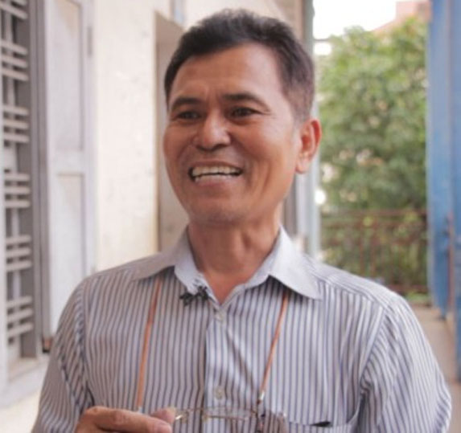 – คุณอลงกรณ์ครับ ช่วยยืนยันกับเราหน่อยว่า EFFERIN มีผลกับสมองส่วนควบคุมความอยากอาหารของมนุษย์จริงๆ เหลือเชื่อมาก!– ทำได้จริงๆ ครับ และคุณไม่ต้องกังวลอะไรเลย ผลิตภัณฑ์นี้ได้จากธรรมชาติล้วนๆ ไม่มีส่วนประกอบที่ได้จากเคมี และไม่ส่งผลหรือเป็นอันตรายต่อร่างกายของคุณอย่างแน่นอนครับ เพราะกระบวนการต่างๆ เกิดขึ้นในระดับของระบบเผาผลาญในร่างกาย เมื่อคุณใช้ผลิตภัณฑ์ตัวนี้ครั้งแรก ระบบต่อมไร้ท่อจะเริ่มฟื้นฟูตัวเอง ลองจินตนาการนะครับ ว่าร่างกายของคุณกำลังเสื่อมลง อวัยวะต่างๆ ก็เสื่อมสภาพ ระบบทุกอย่างเริ่มทำงานได้ไม่ดีเหมือนเดิม น้ำหนักส่วนเกินก็เพิ่มขึ้น EFFERIN จะเข้าไปยืดอายุให้กับทุกระบบในร่างกาย ช่วยให้ระบบต่างๆ กลับมาทำงานได้เหมือนกับคนที่มีรูปร่างผอม
– แม้แต่คนที่ชอบกินหรือกินเก่ง ก็จะไม่กลับมาอ้วนอีกหรือครับ?– ถูกต้องแล้วครับ! กฤษฎาพิสูจน์ให้เห็นว่าน้ำหนักตัวเกินไม่ใช่เรื่องปกติ มนุษย์เราไมได้เกิดมาเพื่อมีน้ำหนักตัวเกิน นี่คือความมผิดพลาดที่เกิดขึ้นกับชีวิตเรา ระบบเผาผลาญในร่างกายของคนเราและความอยากอาหารที่เกิดขึ้นจากสมองเป็นสิ่งที่ควบคุมได้ ซึ่งเป็นสิ่งที่ EFFERIN ทำนั่นเอง หลังจากที่คุณกินผลิตภัณฑ์นี้เป็นครั้งแรกแล้ว จะเริ่มอยากอาหารน้อยลง ไม่อยากอาหารเหมือนแต่ก่อน เริ่มกินในปริมาณที่น้อยลง และเมื่อกินผลิตภัณฑ์นี้เป็นครั้งที่สอง จะเริ่มสังเกตุตัวเองว่าน้ำหนักตัวหายไปอย่างรวดเร็ว
– บนฉลากผลิตภัณฑ์ระบุว่า ลดน้ำหนักได้มากสูงสุด 14 กิโลกรัมภายใน 7 วัน จะไม่อันตรายต่อร่างกายใช่มั้ยครับ?– ผมอยากเตือนไปถึงคนที่อดอาหารเพื่อลดน้ำหนักครับ ถ้าคุณกินหัวหอมวันละ 1 หัว แล้วลดน้ำหนักลงได้ขนาดนี้ มันอันตรายมากๆ ครับ เพราะกล้ามเนื้อจะถูกย่อยสลาย แต่ EFFERIN เป็นผลิตภัณฑ์ที่ไม่เหมือนสินค้าลดน้ำหนักทั่วไป ผลิตภัณฑ์ของเราเน้นการเผาผลาญไขมันเฉพาะส่วนโดยไม่กระทบกับกล้ามเนื้อ เพราะฉะนั้นคุณก็จะไม่ได้เพียงลดน้ำหนักตัวลงได้ แต่รูปร่างของคุณก็ยังคงฟิตและเฟิร์มด้วย
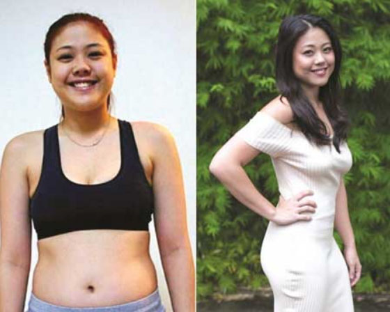 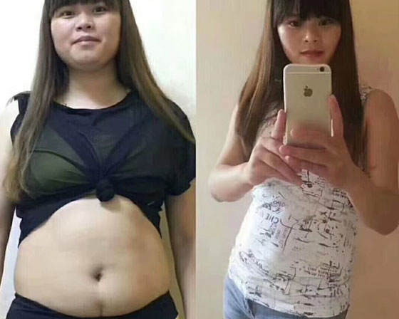 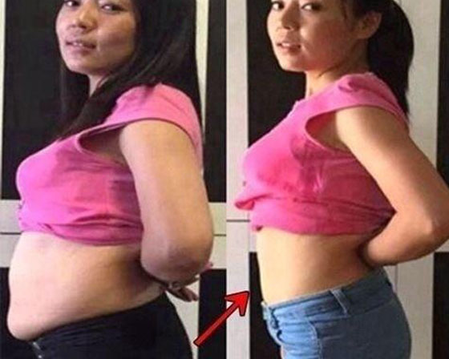 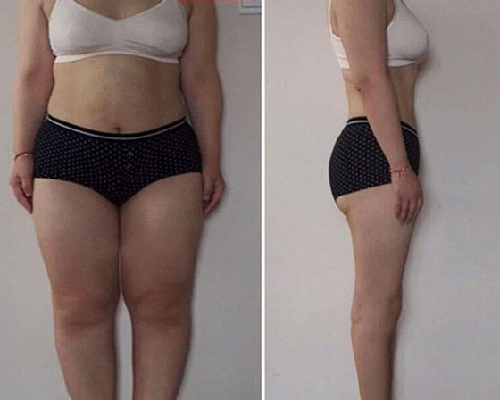 – แสดงว่า เราไม่ต้องพึ่งสินค้าลดน้ำหนักอีกเลยใช่มั้ยครับ?– ไม่จำเป็นเลยครับ คุณยังสามารถกินได้ตามปกติ สินค้าลดน้ำหนักทั่วไปให้สารอาหารต่ำมาก การกินยาลดน้ำหนัก คุณจะไมได้รับสารอาหารที่จำเป็นต่อร่างกายเลย คุณกินได้ตามปกติเลยครับ ไม่ต้องทนกับการทำฟาสติ้งหรือโหมออกกำลังกายอย่างหนัก การออกกำลังกายหนักๆ ไม่เหมาะกับคนที่น้ำหนักตัวเกิน เพราะมันจะไปเพิ่มความเครียด ร่างกายของคุณจะอาการซ็อคจากการโหมออกกำลังกายอย่างหนัก ไขมันจะเริ่มสะสมมากขึ้น สำหรับEFFERIN คุณสามารถใช้ชีวิตได้ตามปกติในระหว่างที่ลดน้ำหนัก และที่ยอดเยี่ยมที่สุด น้ำหนักตัวของคุณจะไม่กลับขึ้นมาอีก ร่างกายของคุณจะ rebuild กลับมาใหม่อีกครั้ง
– ผลิตภัณฑ์ของคุณมีจำหน่ายตามร้านขายยามั้ยครับ?– เบื้องต้นเราจัดจำหน่ายผลิตภัณฑ์ผ่านทางร้านเอ้าท์เลทขนาดเล็กไปก่อน หลังจากนั้นเริ่มติดต่อเพื่อวางจำหน่ายผ่านร้านขายยา เรากลับถูกปฏิเสธที่จะให้วางจำหน่ายในร้านขายยา ถ้าคนหาซื้อผลิตภัณฑ์ไม่ได้ การลดน้ำหนักหรือควบคุมน้ำหนักก็ไม่สามารถทำได้ เราเองก็ไม่เข้าใจเหมือนกันว่าทำไมถึงเป็นแบบนี้ไปได้ มันแสดงให้เห็นว่าร้านขายยาบวกราคาเพิ่ม เนื่องจากราคาจริงที่เราตั้งราคาไว้ไม่ทำกำไรให้กับร้านขายขาพวกนี้มากนัก ซึ่งราคาขายที่เพิ่มเข้ามาอาจสูงขึ้น 150% ซึ่งเป็นราคาที่คนทั่วไปหาซื้อไม่ไหวจริงๆ ทั้งที่ผลิตภัณฑ์ตัวนี้คิดค้นขึ้นมาเพื่อพวกเขาอย่างแท้จริง เราเลยปฏิเสธที่จะวางจำหน่ายผ่านร้านขายยา หันมาจำหน่ายผ่านช่องทางออนไลน์แทน ซึ่งการสั่งซื้อทางออนไลน์มันง่ายมากๆ ครับ
– แต่ไม่ได้ทุกคนที่จะใช้อินเตอร์เนตได้คล่องแคล่ว?– เราทราบข้อจำกัดตรงนี้ดีครับ นี่จึงเป็นเหตุผลที่ว่าทำไม EFFERIN ถึงมีขั้นตอนการสั่งซื้อที่ง่ายมากๆ แค่เพียงคุณพิมพ์ชื่อ และเบอร์โทรศัพท์ที่ติดต่อได้เอาไว้ จากนั้นเราจะโทรฯ กลับไปหาคุณและช่วยดำเนินการสั่งซื้อผลิตภัณฑ์ ขั้นตอนนี้ง่ายมาก ไม่ซับซ้อนยุ่งยากเลยครับ นอกจากนี้ ถ้าคุณสั่งซื่อผ่านออนไลน์ คุณจะได้รับส่วนลด 50% แต่ส่วนลดนี้จะอยู่เพียงไม่นานนะครับ เราพยายามสุดความสามารถที่จะตรึงส่วนลดนี้เอาไว้ให้นานที่สุดเพื่อให้คนได้ทราบข่าวและสั่งซื้อผลิตภัณฑ์เข้ามา
– แสดงว่าดารานักแสดงฮอลลี่วู้ดก็จะไม่มีโอกาสได้ใช้ผลิตภัณฑ์นี้เพื่อดูแลควบคุมน้ำหนักใช่มั้ยครับ– ไม่ใช่แค่คนในฮอลลี่วู้ดเท่านั้นนะครับที่จะไม่สามารถหาซื้อนี้ได้ ผลิตภัณฑ์นี้จะจัดจำหน่ายขายในประเทศไทยเท่านั้น ไม่วางจำหน่ายในประเทศอื่นๆ เราทำมาเพื่อให้คนไทยได้เข้าถึงผลิตภัณฑ์ตัวนี้อย่างทั่วถึง ยิ่งเราสามารถผลิตได้ภายในประเทศ ต้นทุนการผลิตเลยไม่สูงมาก ทำให้เราสามารถจำหน่ายผลิตภัณฑ์ตัวนี้ได้ในราคาถูก
ประกาศสำคัญ!
ในระหว่างที่เราจัดทำบทความนี้ สื่อมวลชนจำนวนมากได้ขอสัมภาษณ์ คุณกฤษฎา หลังจากนั้น ยอดสั่งซื้อผลิตภัณฑ์ก็เข้ามาอย่างถล่มทลาย ศาสตราจารย์อลงกรณ์ ได้ติดต่อเราและขอร้องให้ช่วยแจ้งข่าวกับผู้อ่านว่า โปรโมชั่นพิเศษนี้จะสิ้นสุดลงในวันที่ 09/06/2021! พิเศษ! คุณมีเวลาที่จะสั่งซื้อ EFFERINE ราคาพิเศษนี้ จะสิ้นสุดลงภายในวันนี้เท่านั้น!
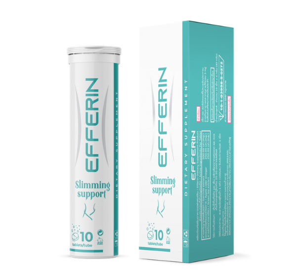มีคนลงทะเบียนสั่งซื้อสินค้าแล้ว 3,992,002 ออเดอร์
รับ ส่วนลด 50% ถึงวันที่ 09/06/2021เท่านั้น
สั่งซื้อผลิตภัณฑ์ รับส่วนลดพิเศษ พิมพ์ชื่อ-นามสกุล เบอร์โทรศัพท์ แล้วกด “สั่งซื้อ”
ฟรี ค่าขนส่ง ไม่ต้องจ่ายเพิ่ม!
ความคิดเห็น
เข้าใจความรู้สึกของคุณกฤษฎาเลยค่ะ เคยอ้วนมาตลอดชีวิตเหมือนกัน ผ่านมาหมดแล้ว ยาลดน้ำหนัก หรือออกกำลังกาย ไม่ได้ช่วยอะไรได้เลย EFFERIN เป็นความหวังสุดท้ายค่ะ กดสั่งซื้อไปแล้วค่ะ ใช้แล้วได้ผลยังไงแล้วจะกลับมาเล่าให้ฟังอีกทีค่ะ
ขอให้ทำสำเร็จนะครับ คุณอรทัย เตือนก่อนนะครับว่า ผลิตภัณฑ์ตัวนี้เห็นผลเร็วมาก ระวังหน่อยนะครับอย่าลดจนผอมเกินไปนะครับ
เคยลองใช้ EFFERIN เป็นคนแรกๆ ค่ะ บอกเลยว่า มันเวิร์คจริงๆ ค่ะ ตอนนั้นลดน้ำหนักลงไปได้ 32 โล ผอมลงจนเปลี่ยนเป็นคนละคนเลยค่ะ แม้แต่คนใกล้ตัวยังมาสารภาพว่ากลับมาตกหลุมรักอีกรอบ
ขออวดผลงานหน่อยค่ะ ถ้าไม่ได้ EFFERIN ก็ยังเป็นยัยอ้วนคนเดิมอยู่แน่ๆ ค่ะ พอน้ำหนักตัวหายไป 26 โล ตัวเบามากค่ะ
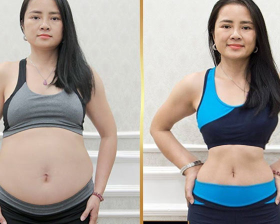สุดยอดเลยครับ ขอแสดงความยินดีจากใจเลยครับ!
ลดได้จริงๆ นะคะ ตอนแรกก็ไม่เชื่อหรอก แต่แค่สัปดาห์แรก น้ำหนักตัวก็เริ่มลดลงให้เห็นแล้ว ไม่ต้องอดอาหาร ความอยากอาหารก็ค่อยๆ ลดลงด้วยค่ะ ไม่พะอืดพะอม หรือรู้สึกไม่สบายตัวด้วยค่ะ
ใครก็ได้บอกหน่อย เราพลาดตรงไหน? ทำไมเราลดได้แค่ 1 กิโลเดียวภายในหนึ่งอาทิตย์
คุณอิรวดีครับ ลองอ่านคำแนะนำการใช้บนฉลากข้างกล่องอีกทีนะครับ อาจจะเป็นเพราะคุณไม่ได้ดื่มทุกวันหรือเปล่าครับ ถ้าคุณไม่ได้ดื่มเป็นประจำหรือต่อเนื่อง การลดน้ำหนักก็จะไม่ค่อยเห็นผลนะครับ
แก้วผอมสำเร็จแล้วค่ะ ไม่อยากเชื่อเหมือนกันว่าแก้วจะผอมได้จริงๆ คุณสามีเป็นคนซื้อ EFFERIN มาให้ลองค่ะ หลังแต่งงาน เราก็น้ำหนักตัวเกินด้วยกันทั้งคู่ ทีแรกแก้วก็ไม่เชื่อหรอกนะคะ สามีเลยดื่มคนเดียวก่อน หลังจากที่แก้วเห็นว่าน้ำหนักตัวของสามีลดลงอย่างรวดเร็ว แก้วก็สั่งซื้อกล่องหนึ่งค่ะ แล้วดูผลที่เกิดขึ้นซิคะ!
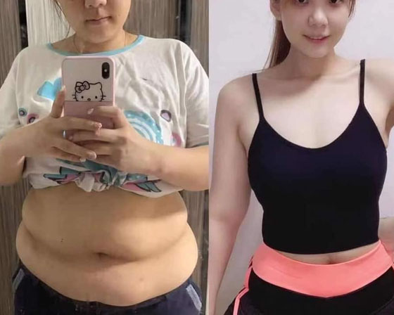ว้าวมากครับคุณแก้วตา ดีใจกับคุณด้วยจริงๆ ครับ!
ผมเริ่มอ้วนหลังจากแต่งงานครับ เพราะภรรยาของผม เธอทำอาหารอร่อยมาก ทำให้ผมมีความสุขกับการกินเป็นพิเศษ หลังจากนั้นผมก็ไม่สามารถลดน้ำหนักลงมาได้อีกเลย ผมมีเพื่อนร่วมงานคนหนึ่งที่อ้วนมากๆ แล้ววันหนึ่งเขากลับมาจากลาพักร้อนด้วยรูปร่างที่ผอมลง เขาเล่าให้ผมฟังว่า EFFERIN ช่วยเขาไว้ครับ ผมรีบสั่งซื้อกล่องหนึ่งทันที ตอนนนี้ผมลดน้ำหนักได้ 18 กิโลฯ แล้วครับ และทำให้ผมดูหนุ่มขึ้นกว่าอายุจริงด้วยซ้ำครับ
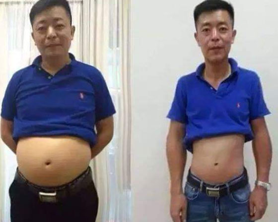แอลเคยมีชีวิตที่ต้องคุมอาหารมาตลอด น้ำหนักตัวก็ลดลงมา แต่แล้วน้ำหนักตัวก็ดีดกลับขึ้นมาอีก แต่ EFFERIN ก็ให้คำตอบที่แอลต้องการได้แล้ว น้ำหนักตัวหายไปและไม่กลับมาอีกเลย ที่สำคัญ ระบบเผาผลาญและความอยากอาหารของแอลก็เปลี่ยนแปลงไป แอลกินอาหารไม่เท่าไหร่ก็อิ่มแล้ว มันไม่รู้สึกอยากจริงๆ นะคะ ถึงแอลจะเป็นคนกินเก่ง กินจุบจิบ แต่อาหารที่กินเข้าไปก็ไม่สะสมในรูปของไขมันในร่างกายอีกเลยค่ะ มันถูกเผาผลาญจนหมดในร่างกายเลยค่ะ
ขอดูรูปของคุณหน่อยคะ อยากเห็นผลที่เกิดขึ้นกับคุณแอล
อุ๊ย เขินจังค่ะ แต่ให้ดูได้นะคะ เผื่อเป็นแรงบันดาลใจให้คนอื่นค่ะ นี่ค่ะ ดูที่ภาพซ้าย คือแอลสมัยก่อน ก่อนที่จะได้ดื่ม EFFERIN และภาพขวา คือแอล เมื่อหนึ่งเดือนที่แล้วค่ะ
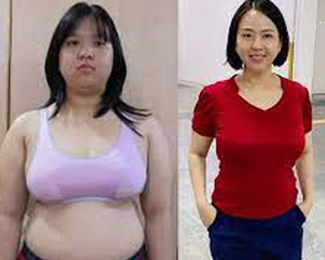แปลกมากที่บางคนไม่เชื่อว่า EFFERIN ช่วยได้ แค่เห็นรีวิวบนอินเตอร์เน็ตก็น่าจะมั่นใจได้แล้วนะ นิดสั่งซื้อ EFFERIN จากคำแนะนำของเพื่อนค่ะ นิดตามตลอดแล้วเพื่อนก็ลดน้ำหนักตัวได้เยอะมาก
ทำไมต้องใช้ยา? แค่กินให้น้อยลง ไม่เสี่ยงอันตรายกับสุขภาพตัวเองด้วย!
ถูกต้องแล้วครับคุณลลนา การกินมากเกินไปก็ไม่ดีกับสุขภาพ แต่มีคนจำนวนไม่น้อยเลยนะครับที่มีปัญหาเกี่ยวกับระบบต่อมไร้ท่อ มันทำให้ไม่สามารถควบคุมความอยากอาหารได้ บางคนต่อให้กินน้อยแค่ไหน แต่ไขมันก็ยังสะสมในร่างกายอยู่ดี EFFERIN ถึงได้ถูกคิดค้นมาเพื่อคนที่ต้องทุกข์ทรมานจากน้ำหนักตัวที่มากเกินไปยังไงล่ะครับ ที่สำคัญ ไม่เป็นอันตรายต่อร่างกายเพราะไม่มีส่วนประกอบจากเคมีครับ
ให้ดูภาพก่อน-หลังค่ะ ดิฉันคิดว่าทุกคนควรจะได้ทราบถึงความสามารถของผลิตภัณฑ์ตัวนี้ ดิฉันใช้ชีวิตอยู่ต่างประเทศมาหลายปีก็ยังไม่เคยเห็นผลิตภัณฑ์ตัวไหนที่ช่วยเรื่องการลดน้ำหนักได้เลย ตอนบินกลับมาเมืองไทย ดิฉันได้พบกับ EFFERIN ดิฉันตัดสินใจคว้าโอกาสสุดท้ายที่จะกลับมาผอมอีกครั้ง เอาจริงๆ เลยนะคะ ดิฉันไม่ผิดหวังเลย วันที่3 หลังจากได้ลอง ดิฉันสังเกตุว่ากางเกงที่ใส่อยู่หลวมขึ้น ผ่านไปหนึ่งสัปดาห์ ดิฉันต้องซื้อกางเกงตัวใหม่ และต้องโละเสื้อผ้าในตู้ทั้งหมดออกหลังจากลองดื่มได้หนึ่งเดือน ไม่รู้สึกว่าตัวกระเพื่อมเวลาเดินหรือก้มตัวได้สบายมากไม่ติดพุงก้มไม่ลงเหมือนก่อน ไม่รู้สึกอับอายเวลาใส่ชุดว่ายน้ำหรือใส่ชุดที่ต้องเปิดเผยเรือนร่างบางส่วน สามีที่เฉยชากับดิฉันมานานก็หันกลับมาสนใจดิฉันอีกครั้ง มันน่าอายมากที่แม้แต่ลูกสาวของดิฉันเองก็เคยอายที่ต้องมีแม่อ้วน เธอเคยพูดว่า “ฉันมีแม่อ้วน” และเคยขอร้องไม่ให้ดิฉันไปรับเธอที่โรงเรียน เพราะไม่อยากให้เพื่อนเห็นดิฉัน แต่ตอนนี้ลูกสาวกล้าชวนดิฉันไปงานโรงเรียนและยอมถ่ายรูปคู่กับดิฉัน แถมยังโพสต์ภาพนั้นขึ้นบนเฟซบุคของเธอด้วย ครอบครัวดิฉันภูมิใจที่มีภรรยาและแม่ที่ดูดี ดูสวย! มันรู้สึกดีมากเลยที่ดิฉันไม่ต้องกังวลใจตอนกินอาหาร นี่คือเบื้องหลังของการลดน้ำหนักและลดน้ำหนักของดิฉัน ปัจจุบันนี้ชีวิตของดิฉันได้เปลี่ยนไปแล้ว
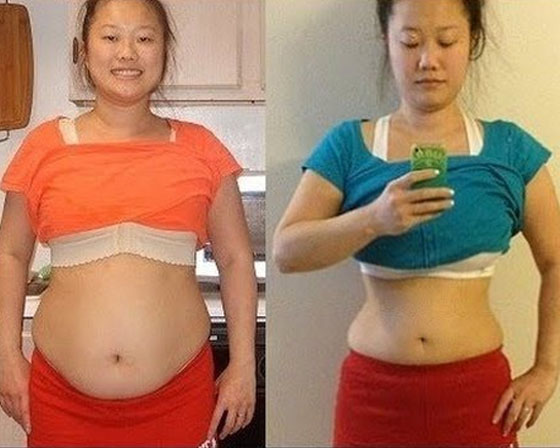ใจยังไม่กล้าพอจะลองค่ะ อรเคยพยายามลดน้ำหนักมา 10 หรือ 11 ครั้งแล้วค่ะ และทุกครั้งน้ำหนักตัวก็จะดีดกลับมาเหมือนเดิม อรกลัวจะผิดหวังอีก กลัวจะเสียเงินแล้วไม่ได้ผล...
คุณอรครับ ผมเข้าใจความรู้สึกของคุณดีครับ เพราะผมก็เคยกลัว เคยไม่มั่นใจ นี่จึงเป็นเหตุผที่ว่าทำไมผมถึงได้คิดค้น EFFERIN ขึ้นมา เพื่อให้หลายๆ คนไม่ต้องเป็นทุกข์ ผิดหวังเสียใจครับ ไม่มีอะไรต้องกังวลครับ ลองดูรีวิวจากผู้คนมากมายในคอมเมนต์ก่อนก็ได้ครับ ทุกคนล้วนประสบความสำเร็จในการลดน้ำหนัก คุณก็เช่นกัน
ผมเป็นโสดจนอายุ 45 ครับ ต้องยอมรับแบบไม่อายเลยว่า เพราะความอ้วนของผมนี่แหละที่ทำให้ไม่มีสาวๆ คนไหนสนใจผมเลย ไม่มีสาวคนไหนชอบคนอ้วนครับ ผมเคยมีความรัก 2 ครั้งและทั้งสองครั้ง เป็นความรักที่มีแต่ความทุกข์ครับ ผู้หญิงที่เข้ามาทำกับผมเหมือนผมเป็นตัวตลก บางคนหัวเราะเยาะใส่ผมด้วยซ้ำ ตอนนั้นผมไม่มีแรงฮึดสู้ลุกขึ้นมาควบคุมอาหารหรือออกกำลังกายเลย เรียกว่าผมยอมแพ้ตั้งแต่ยังไมได้ลุกขึ้นต่อสู้กับการลดน้ำหนักเลยด้วยซ้ำ แต่โชคดีมากที่ผมได้ลอง EFFERIN ตอนนี้ผมสามารถใส่เสื้อผ้าไซส์เล็กลงได้แล้ว รูปร่างของผมบางลง กระชับขึ้น แต่ผมก็ยังเจียมเนื้อเจียมตัวเหมือนเดิมนะครับ สาวๆ ก็มองผมไม่เหมือนเดิมแล้วครับ ตอนนี้เราเป็นเพื่อนสนิทแล้วนะครับ ใครจะรู้ว่าจะเกิดอะไรขึ้นต่อไป!
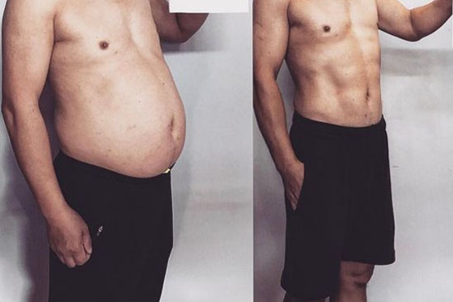ขอบคุณมากสำหรับบทสัมภาษณ์ที่น่าสนใจขนาดนี้ ผมกดสั่งซื้อไปเรียบร้อยแล้ว รอรับสินค้าอยู่นะครับ...แล้วเดี่ยวมาดูผลกันว่าหลังจากที่ผมได้ลองแล้วจะเห็นผลหรือไม่ ตอนนี้ผมหนัก 81 กิโลฯ สูง 168ซม.
ต้องควบคุมอาหารไปด้วยมั้ยคะ? ยังกินเค้ก ขนมหวานๆ ได้มั้ย?
คุณรินลดาครับ ไม่ต้องอดอาหารเลยครับ ยังกินได้ตามปกติ ไขมันที่อยู่ในร่างกายก็จะถูกเผาผลาญด้วย คุณจะรู้สึกได้เองว่าไม่ค่อยหิวหรืออยากอาหารเหมือนเดิมแล้ว
ดิฉันเริ่มดื่ม EFFERIN มาได้สัปดาห์หนึ่งแล้วค่ะ น้ำหนักหายไป 8 กิโลฯ จริงๆ ก็มีแอบกลัวนะคะ... ดิฉันเคยหนักถึง 96 กิโลฯ จนไม่กล้าออกจากบ้าน มาถึงตอนนี้แทบไม่อยากเชื่อว่าจะลดได้มากขนาดนี้
ไม่ต้องกังวลเลยครับคุณสิริพร น้ำหนักจะค่อยๆ ลดลงไปเรื่อยครับ หายไป 8 กิโลฯ ยังลงไปได้อีกครับ
สวัสดีค่ะ สนใจสั่งซื้อสินค้าค่ะ อยากสั่งไว้หลายๆ กล่อง เก็บไว้ดื่มได้ทั้งปีค่ะเผื่อน้ำหนักตัวจะกลับมาค่ะ
ไม่จำเป็นต้องดื่ม EFFERIN ทั้งปีครับ! เพราะน้ำหนักตัวของคุณจะไม่ดีดกลับขึ้นมาอีกครับ ด้วยความสามารถของผลิตภัณฑ์นี้
เคยซื้อให้คุณแม่ดื่มค่ะ ท่านป่วยเป็นเบาหวานมา 15 ปี ไม่สามารถเดินไปไหนมาไหนได้ วันๆ ได้แต่นั่งอยู่บ้าน ไม่ได้ลุกเดินหรือเคลื่อนไหวมากนัก ก็เริ่มกังวลเรื่องน้ำหนักตัว ไม่นานมานี้ มีแขกมาบ้าน ท่านก็จะไม่กล้าออกมาให้ใครเห็นเพราะอายรูปร่างที่เปลี่ยนไป อุ๊ต้องหยุดถ่ายรูป และเสียใจมาตลอด อุ๊ต้องพูดจาหว่านล้อมให้แม่ยอมกิน EFFERIN แบบเม็ดก่อนทานอาหารเช้า คุณนึกภาพคุณแม่ของอุ๊มีความสุขออกมั้ยคะ ตอนที่ท่านรู้สึกว่าน้ำหนักตัวเริ่มลดลง ท่านลุกจากเตียงเป็นครั้งแรกหลังจากที่นอนอยู่บนเตียงมาหนึ่งปี ท่านจะชั่งน้ำหนักเป็นประจำและมีความสุขทุกครั้งที่น้ำหนักตัวลดลง ปัจจุบันนี้ น้ำหนักตัวท่านลดลงมาจนผอมแล้วและไม่ต้องทุกข์ใจเหมือนแต่ก่อนแล้วค่ะ แล้วยังส่งต่อความมั่นใจให้อุ๊ลองดื่มEFFERIN แบบน้ำเช่นเดียวกันค่ะ แม้ว่าอุ๊จะไม่ได้มีปัญหาน้ำหนักตัวก็ตาม แค่ดูแลนิดหน่อย รูปร่างก็สมส่วนแล้วค่ะ
ครอบครัวของวรรณต้องขอบคุณจากใจเลยค่ะ คุณยาย คุณแม่ และลูกสาว ในตระกูลเราโดยเฉพาะฝ่ายผู้หญิงได้กรรมพันธุ์อ้วนง่าย เราไม่เหลือความหวังเลยว่าวันหนึ่งจะผอมเหมือนคนอื่นได้ แต่ EFFERIN ทำให้เราสามารถลดน้ำหนักลงมาได้ ลูกสาวของวรรณลดน้ำหนักลงได้มากสุด ดูซิคะ เธอน่ารักแค่ไหน
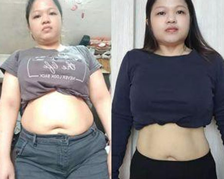สิ เป็นคุณแม่ลูก3 ค่ะ หลังคลอด น้ำหนักตัวก็ไม่เคยลดลงได้เลยค่ะ ช่วงแรกที่ต้องให้นมลูกมีลดลงเล็กน้อย แต่หลังจากนั้นก็มีแต่ขึ้นค่ะ EFFERIN จะช่วยสิ ได้จริงมั้ย? เพราะว่าสิอ้วนแบบมานี้มา 15 ปีแล้ว
ไม่สำคัญหรอกครับว่าคุณมีน้ำหนักตัวเกินมานานแค่ไหน ร่างกายของเราจะรีสตาร์ทใหม่และเริ่มกลับมาเผาผลาญไขมันได้จากสัปดาห์แรกที่ได้ลองใช้ครับ
สบายใจได้ค่ะ กาญจ์เองก็เคยอ้วนหลังคลอด ลดไม่ลงมาก่อนค่ะ แต่ EFFERIN ก็ทำให้ทุกอย่างเกิดผลรวดเร็วมาก กาญจ์เองก็เคยถกเถียงกับเพื่อนๆ มาก่อนเรื่องการลดน้ำหนัก ซึ่งพวกเขาไม่เชื่อว่าจะทำได้เพราะกาญจ์อ้วนมา 9 ปีแล้ว สุดท้าย เพื่อนๆ แพ้ค่ะ